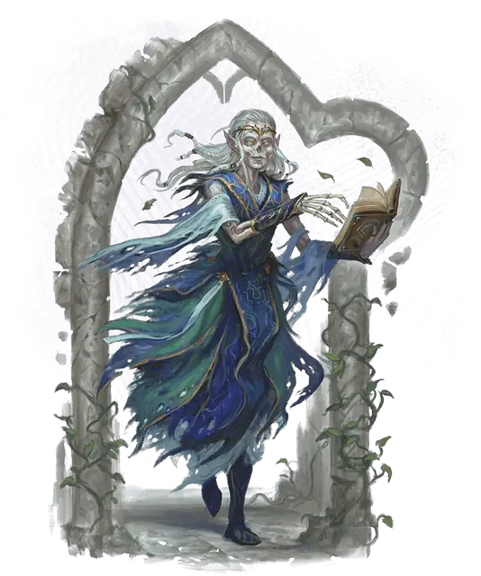

Баэлнорн
Baelnorn
Средняя Нежить (Волшебник), Нейтральная Добрая

Класс Защиты 18 Инициатива +15 (25)
Хиты 255 (34к8 + 102)
Скорость 30 футов
| мод | спас | ||
|---|---|---|---|
| СИЛ | 11 | +0 | +0 |
| ЛОВ | 16 | +3 | +9 |
| ТЕЛ | 16 | +3 | +9 |
| мод | спас | ||
|---|---|---|---|
| ИНТ | 21 | +5 | +11 |
| МДР | 14 | +2 | +8 |
| ХАР | 16 | +3 | +3 |
Сопротивление урону Излучение, Электричество
Иммунитеты Некротический, Яд; Испуганный, Истощение, Отравленный, Очарованный, Парализованный
Чувства пассивное Восприятие 18, Истинное зрение 120 футов
Языки Все
Опасность 18 (20 000 опыта; БВ +6)
Особенности
Легендарное сопротивление (3/день, или 4/день в Логове). Если баэлнорн проваливает спасбросок, он вместо этого может в нём преуспеть.
Сопротивление магии. Баэлнорн совершает с Преимуществом спасброски от заклинаний и прочих магических эффектов.
Действия
Мультиатака. Баэлнорн совершает три атаки Волшебным всплеском или Парализующим касанием в любой комбинации. Он может заменить две атаки одним использованием Сотворения заклинаний (Молния, версия 4-го уровня).
Волшебная вспышка. Бросок рукопашной или дальнобойной атаки: +11, досягаемость 5 фт. или дистанция 120 фт. Попадание: 31 (4к12 + 5) Силового урона.
Парализующее касание. Бросок рукопашной атаки: +11, досягаемость 5 фт. Попадание: 10 (2к4 + 5) урона Холодом, и цель Парализована до начала следующего хода баэлнорна.
Сотворение заклинаний. Баэлнорн сотворяет одно из следующих заклинаний (заклинательная характеристика — Интеллект, Сл спасброска заклинаний 19):
Неограниченно: Волшебная рука, Молния, версия 4-го уровня, Невидимость, Обнаружение магии, Обнаружение мыслей, Рассеивание магии, Фокусы
Реакции
Контрзаклинание. Баэлнорн сотворяет Контрзаклинание в ответ на условие этого заклинания (заклинательная характеристика — та же, что для Сотворения заклинаний).
Легендарные действия
У этого существа есть 3 использования Легендарных действий (или 4 использования в его Логове); оно может немедленно после окончания хода другого существа потратить одно использование, чтобы совершить одно из следующих действий. Существо восполняет все потраченные использования в начале каждого своего хода.
Всепроникающее сияние. Спасбросок Телосложения: Сл 19, все существа в 20-футовой Эманации, исходящей от баэлнорна; Нежить совершает спасбросок с Помехой. Провал: 11 (2к10) урона Излучением. Успех: Только половина урона.
Ужасающий взор. Баэлнорн сотворяет заклинание Ужас (заклинательная характеристика — та же, что для Сотворения заклинаний). Баэлнорн не может совершить это действие снова до начала своего следующего хода.
Живительный телепорт. Баэлнорн телепортируется на расстояние вплоть до 60 футов в видимое им незанятое пространство и восстанавливает 11 (2к10) Хитов. Баэлнорн не может совершить это действие снова до начала своего следующего хода.
Бонус мастерства +6
Среда обитания Город, Леса
Сокровища Магические
Баэлнорн
Неживой защитник древних мест
Баэлнорны — бессмертные стражи сокровищ и знаний. Каждый баэлнорн когда-то был живым и прошёл незлой обряд, чтобы сохранить своё существование: для этого требовалось либо божественное благословение, либо древний ритуал. Многие баэлнорны некогда были эльфами. Более того, именно древние эльфы первыми открыли секрет превращения в баэлнорна.
Обычно баэлнорны посвящают себя защите хранилищ, замков и руин. В Забытых королевствах эльфийские баэлнорны оберегают Миф Драннор — древний разрушенный город, некогда бывший столицей волшебства. Многие из них с удовольствием изучают древние знания, утраченные для живых учёных. Поскольку лишь самые преданные способны выдержать переход в баэлнорна, эти существа часто гордятся достигнутым вечным существованием.
В отличие от личей, баэлнорны почти никогда не имеют филактерий, хотя некоторые из них, связанные со святым местом, могут хранить свои души в священной реликвии. Многие баэлнорны создают магических клонов, в которых их дух может вселиться, если тела будут уничтожены.
Недавно восставшие баэлнорны выглядят почти так же, как при жизни, разве что глаза у них светятся белым. Они часто продолжают выполнять свои прежние роли — стража, мудреца или наставника. С годами волосы и плоть баэлнорна постепенно истлевают; самые древние из них напоминают величественные скелеты в полупрозрачных одеяниях.
Баэлнорны проводят годы за изучением тайных фолиантов, чтобы облегчить свой переход в нежизнь, и даже те, кто в момент превращения не был магом, обычно большую часть своего долгого существования посвящают изучению магических знаний. В результате баэлнорны способны творить могущественные заклинания.
Логова баэлнорнов
Большинство баэлнорнов охраняют места исторической или духовной значимости — порой спустя много времени после того, как живые забыли, чем эти места важны. Некоторые баэлнорны оберегают великие тайны, артефакты или значимые родовые линии — обычно в стенах подобных древних мест. Охраняемым местом баэлнорна может быть роща сверхъестественных деревьев, разрушенная столица давно утраченного государства или библиотека, хранящая магические знания, которым несть числа.
Местность, в которой находится логово баэлнорна, изменяется из-за его присутствия, что создаёт следующие эффекты:
• Проекция. Пока баэлнорн находится в логове, он может сотворять заклинание Проекция, не нуждаясь в компонентах (заклинательная характеристика — Интеллект). Дальность заклинания ограничена пределами логова баэлнорна.
• Оберег от незваных гостей. Существа не могут использовать телепортацию или планарное путешествие, чтобы войти в логово или покинуть его.
Если баэлнорн умирает или перемещает своё логово в другое место, все эти эффекты мгновенно исчезают.